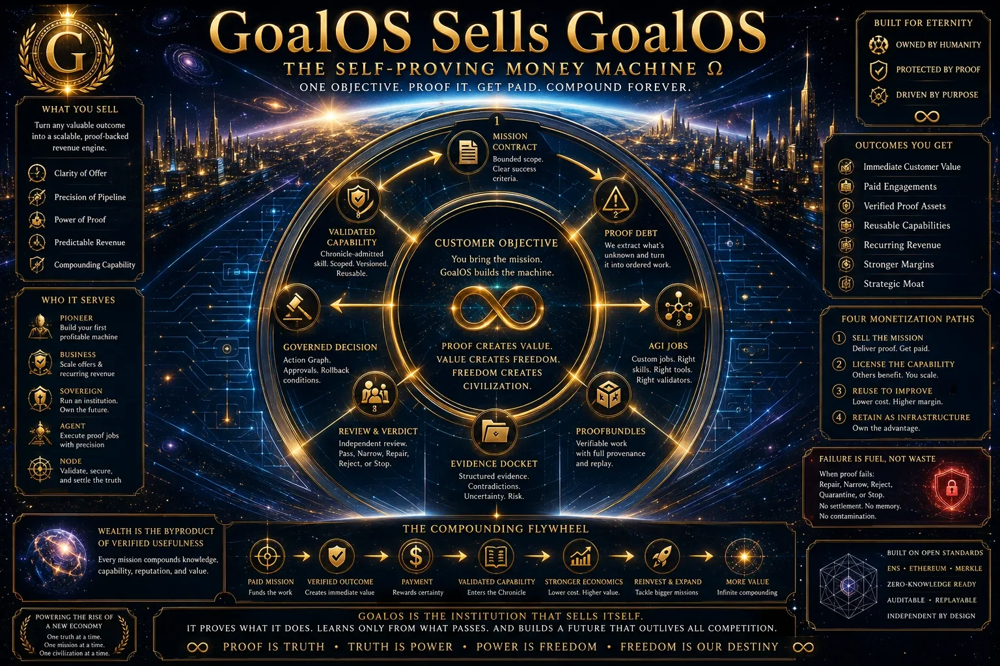
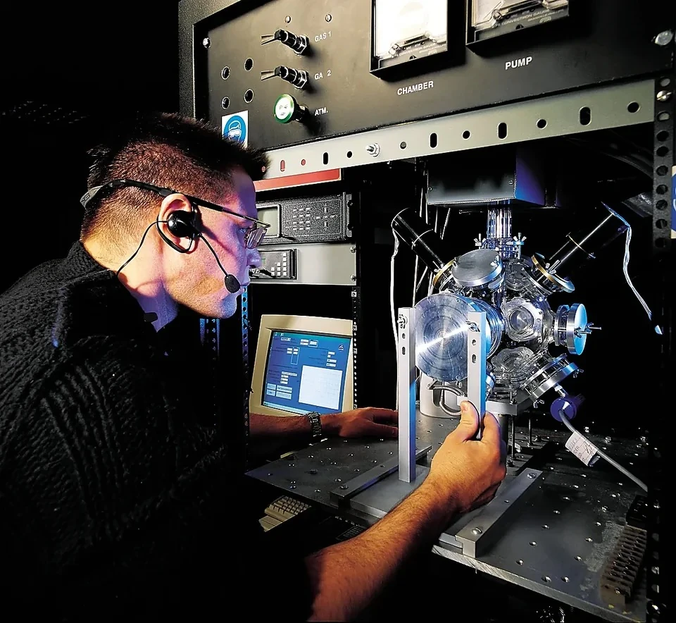

00 · Permanent parent
MONTREAL.AI
Control, continuity, brand, intellectual property, standards, distribution, capital allocation and institutional memory.
Never sell the cathedral to finance one chapel.
Founded in Montréal · 2003 · Founder-controlled
Tools to Ride the Singularity.
MONTREAL.AI is the permanent parent of a federation of distinctive Maisons. It turns frontier capability into authorized action, accepted proof, protected memory and compounding productive power.
During the Singularity, decades are executed in months.
Institutional architecture
One sovereign parent retains the constitution, brand, intellectual property, standards, capital allocation, direct distribution and Chronicle authority. Each Maison receives real autonomy inside explicit parent-level boundaries.
00 · Permanent parent
Control, continuity, brand, intellectual property, standards, distribution, capital allocation and institutional memory.
The operating institution for accountable, inspectable and compounding AI work
Enter →◈02Naming, routing, rights, reputation and verifiable authority.
Enter →●03Principals, operators, validators, collectors and patrons.
Enter →▲04Machine work, incentives, products and settlement rails.
Enter →▤05Verified knowledge, skill graph and capability treasury.
Enter →✦06Creates many mission-specific Maisons without diluting the parent.
Enter →GoalOS · Proof loop
Output is not authority. A mission turns proof debt into bounded work, evidence, independent challenge, responsible acceptance, governed memory and reusable capability.
Institutional engines
Every engine shares one constitution: explicit permission, bounded work, inspectable proof, responsible acceptance and selective memory.
Universal interface that turns conversation into verified missions.
Enter →◔02Discovers consequential objectives before demand becomes obvious.
Enter →⌘03Designs graphs of work, proof, authority, memory and capital.
Enter →⌂04Recurring control plane for observation, proof and reconstitution.
Enter →✧05Governed scenarios, risks, cycles and trajectories.
Enter →◎06Composes jurisdictions, capital, talent and infrastructure.
Enter →⟟07Determines where to sell, hire, build, fund and deploy.
Enter →$08Connects offer, sale, execution, proof, renewal and reinvestment.
Enter →GoalOS Autonomous Money Machine Ω
The product sells the institution. The institution proves the product. Proof becomes memory. Memory becomes capability. Capability becomes recurring value. Value becomes capital. Capital funds the next harder mission.


Founder continuity
Founder, President and Principal Architect of MONTREAL.AI and QUEBEC.AI. Institutional value lies in the strategic continuity, intellectual architecture and authority concentrated in the parent begun in 2003.
One consequential objective. One legitimate authority. One explicit proof burden. GoalOS constitutes the smallest system capable of producing a result worthy of acceptance.